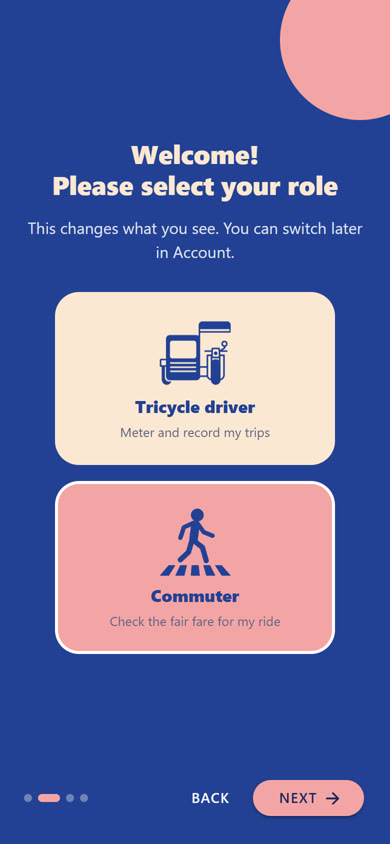
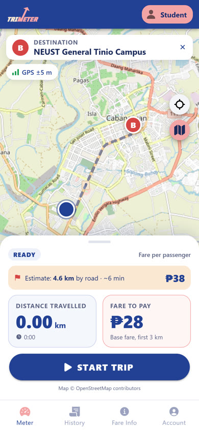
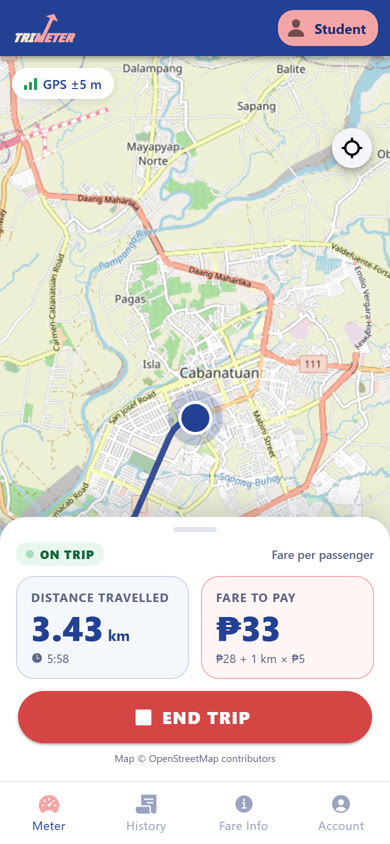
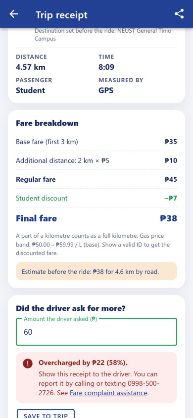
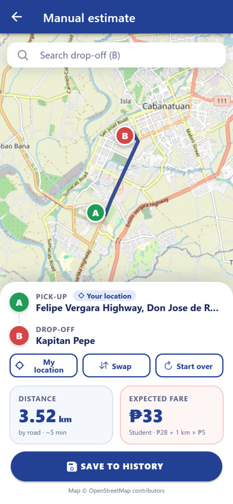
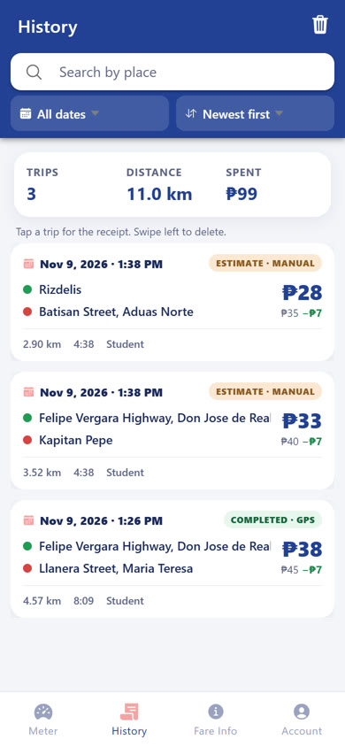
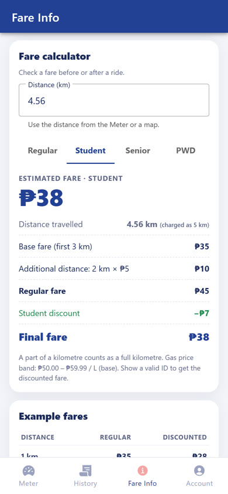
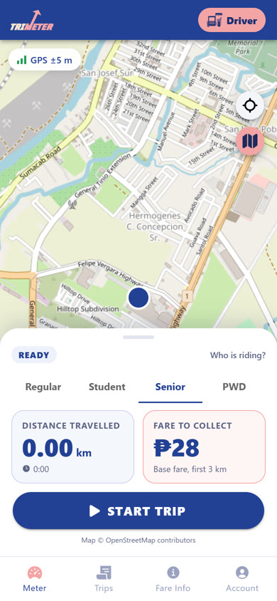

An Android app that meters a tricycle ride with GPS and shows the fair fare from the city ordinance.
TitleTriMeter
PlatformAndroid APK v1.5
Built withIonic 9 · Angular 22 · Capacitor 8
GroupRamoso · De Guzman · Leodones
Install and try it
Download
TriMeter.apk from the Drive folder (Android 7+).
Install
Open the file; allow Install unknown apps if asked.
Set up
Pick a role and passenger type; allow location while using the app.
Try
Start Trip, move 100 m+, End Trip. Or use Manual estimate.
No account, password or API key. Trips stay on the phone. Source: npm install →
npx ng serve; APK: npx ng build → npx cap sync android →
gradlew assembleDebug.
02Problem and Proposed Solution
Cabanatuan is the “Tricycle Capital of the Philippines”, yet riders cannot check what a ride should cost.
Problem
300%
Studies report drivers charging up to 300% above the prescribed rate. TODAs apply their own rates and many drivers estimate by feel.
Intended users
StudentsWorkersSeniorsPWDsTourists
Plus tricycle drivers, who get a neutral meter that prevents disputes.
Solution
Measure the real distance with GPS, apply the official fare matrix live, then give a receipt with a breakdown and an overcharge check.
Built now
GPS meter · commuter & driver roles · fare preview & calculator · receipts & overcharge check · history · manual estimate · offline map
Future improvements
Real accounts · ID-verified discounts · Filipino language · real-time gas prices · driver QR pairing · LGU dashboard
03Application Features
Four tabs: Meter, History, Fare Info and Account. A typical ride takes three taps.

Choose a roleCommuter or driver; passenger type sets the fare.

Fare before the rideSearch “Where to?” for road distance and fare.

Live meterRoute, distance and fare update as you ride.

ReceiptBreakdown, overcharge check, share, city hotline.

Manual estimateStarts at your location; pick only the drop-off.

HistorySearch, filter by date, sort, swipe to delete.

Fare InfoOfficial guideline, calculator, FAQs, penalties.

Driver modePick the passenger per trip; history = records.
Safety nets: End Trip asks first · trips under 50 m are not charged · a crashed trip can be resumed · the map
and meter keep working offline.
04Technical Implementation
Made with the Ionic CLI: 8 pages, 4 components, 9 services, a route guard and 2 pipes. Pages show data; services do the work.
Pages (UI)
Meter · Estimate · Receipt · History · Fare Info · Account · Onboarding
Capacitor Geolocation, Preferences, Haptics, Share · HTTP GET APIs
Capacitor Geolocation: fair GPS
watchPosition (high accuracy) sends a fix every 1–2 s. judgeFix() rejects:
accuracy > 35 mmoves < 5 m (jitter)jumps > 30 m/s
Accepted fixes are summed with the haversine formula into Angular signals, so the screen updates by itself.
Fare computation (pure function)
fare = base + ⌈km − 3⌉ × rate
Distance is rounded to 10 m first, so GPS noise is not billed. Rates follow Ordinance No. 050-2026: ₱35 / ₱28 discounted, +₱5 per km, 11 gas-price bands.
API operations: HttpClient GET
GitHub JSON→saved copy→bundled copy
New fares reach users without a new APK. GETs also call Nominatim (place names) and OSRM (road distance). No API keys.
Data handling: Capacitor Preferences
Trips saved as JSON with full CRUD: add, load, update (amount asked), delete. The trip in progress is saved every 5 s for crash recovery. Map tiles are cached for offline use.
05Testing and Evaluation
92
unit tests (Vitest)
11
end-to-end tests (Playwright)
2
device tests: emulator + real ride
0
failing tests · lint clean
Feature / task tested
Expected result
Actual result
Status
Role selection (commuter / driver)
Role saved; screens change
As expected
Pass
GPS meter, 4.56 km route (regular)
₱45 (₱35 + 2 km × ₱5)
₱45
Pass
Same route, student passenger
₱38 (₱45 − ₱7 discount)
₱38
Pass
Fare preview before the ride
4.6 km by road, ₱45
As expected
Pass
GPS jitter while standing still
0.00 km added
0.00 km
Pass
Trip with no distance
Not saved as a paid trip
“Discard trip” offered
Pass
Save, search and delete trips
Kept, filtered, deleted after confirm
As expected
Pass
Overcharge check (₱90 asked vs ₱45)
“Overcharged by ₱45 (100%)”
As expected
Pass
Fare data vs. city guideline
All 11 gas bands match
As expected
Pass
App closed mid-trip (emulator)
Trip resumes; student ₱38
4.41 km, ₱38
Pass
Offline map (airplane mode)
Cached map; clear note if missing
As expected
Pass
Real ride on our Android phone (v1.4)
Distance and fare update live
2.77 km, 9:04, GPS ±4–6 m → ₱34
Pass
Tracking with the app in the background
Keeps measuring
Android may pause GPS
Future
Issues and limitations
GPS drifts near tall buildings and in bad weather.
The app must stay open; Android can pause GPS in the background.
The guideline prints ₱4 and ₱5 per km for discounted riders; we confirmed ₱5 is charged.
No real login: discounts rely on the driver checking an ID.
Fixed during testing: overlapping map and panels, small A/B pins, a grey map offline.
Recommended improvements
Foreground service so tracking continues with the screen off.
Passenger counter for groups of up to 3.
Filipino language option and a larger-text mode.
Later: verified ID discounts, driver QR pairing, LGU dashboard.
06AI Usage Disclosure
Tool used
Claude Code (Anthropic), an AI coding assistant in VS Code.
How it helped
Scaffolding with the Ionic CLI
Writing and refactoring the code
Unit and end-to-end tests
Our improvement brief; checking fare sources
What we did
Supplied the Figma design and the city fare guideline
Reviewed the code and ran all tests
Tested on our phone; reported issues that were fixed
Recorded a real ride and the narration in our own voices
We can explain the main code (location.ts, fare.ts, fare-matrix.ts,
trip-storage.ts). No passwords, private keys or personal data were used.
··References
City Government of Cabanatuan (2026). Cabanatuan City Tricycle Fare Guidelines, Ordinansa Blg. 050-2026 (April 14, 2026).